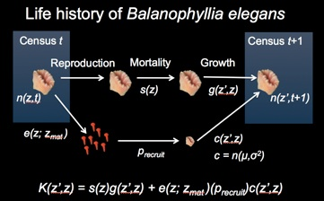

Robin Elahi, PhD
Marine Community Ecology and Population Biology
Research
Climate warming, body size decline, and demographic models
Body size profoundly influences physiological traits, ecological relationships, and the evolutionary success of organisms. A primary determinant of body size is temperature. Across ectothermic taxa, body size tends to be inversely correlated with temperature. In the context of climate change, reductions in body size may be a general response to warming temperatures. Here we tested whether body size and growth rates have declined in B. elegans over nearly four decades in Washington State, USA. During this period, mean annual temperatures have increased by 0.9° C. We then used empirical data on fecundity, survival, and growth to parameterize an integral projection model for the modern population. Together with explicit predictions based on the Arrhenius equation in the context of temperature-size theory, we simulated the effects of temperature on two key population traits – maximum body size and population growth rate. We compared model predictions to observations of maximum size from the historic population, as well as populations for southern and central California.

Life history diagram representing the integral projection model for Balanophyllia.